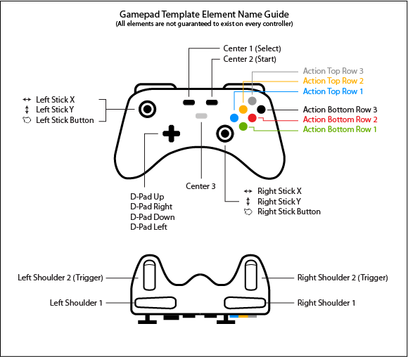

Controller Templates
A Controller Template represents a generalized controller layout that applies to all compatible controllers providing a common interface to work with these controllers. When you create a map for a Controller Template, any controller that implements the template will inherit that map automatically without the need for you to create a map specifically for that controller. For example, Rewired comes with a Gamepad Template. When you create a map for this Gamepad Template, you do not need to create individual maps specifically for any of the gamepads listed on this page because they are all covered by the Gamepad Template. This makes is much quicker to create pre-defined controller maps for a huge variety of controllers. Additionally, as more controllers are added to the Template in the future, the map you've already created will work with these new controllers as well.
If you have created a map for a Controller Template but still want to make a map for a specific controller that is covered by the Controller Template, just create the map for the specific controller and it will override the map defined in the Template.
Controller Templates can also be accessed at runtime through scripting for a variety of purposes.
For information about which controllers are compatible with which Controller Templates, please see Supported Controllers.
The Gamepad Template allows you to make a map which will cover all of the gamepads listed here.
NOTE: Do not be confused and assume that the Gamepad Template will apply to and work with every gamepad in existence. The Template only applies to and works with recognized gamepads that have controller definitions. There is no possible way to create a system that can automatically recognize and map all gamepads, steering wheels, flight controllers, or any other type of device because the required information to do this simply does not exist in the USB or HID data provided by the device. Only devices that have controller definitions can work with the Template system.
The element names of the Gamepad Template are generalized because not all gamepads use the same names for all elements. Note that even though the Template element names are generalized, during gameplay, Rewired will use the controller's element's actual name instead of the generalized name. For example, an XBox 360 controller will report "A" instead of "Action Bottom Row 1" for the green button.
To avoid confusion when mapping the Gamepad Template, refer to the following element naming guide:

Scripting Reference:
- Interface - IGamepadTemplate
- Class - GamepadTemplate
The Racing Wheel Template allows you to make a map which will cover all of the wheels listed here. No diagram exists showing the elements visually because there is no generally accepted universal racing wheel layout as there is for gamepads. The element names should be straightforward enough to understand what they would map to on a device.
Scripting Reference:
- Interface - IRacingWheelTemplate
- Class - RacingWheelTemplate
The HOTAS Template allows you to make a map which will cover all of the HOTAS devices and flight sticks listed here. No diagram exists showing the elements visually because there is no generally accepted universal HOTAS layout as there is for gamepads. The element names should be straightforward enough to understand what they would map to on a device.
Scripting Reference:
- Interface - IHOTASTemplate
- Class - HOTASTemplate
The Flight Yoke Template allows you to make a map which will cover all of the flight yokes listed here. No diagram exists showing the elements visually because there is no generally accepted universal flight yoke layout as there is for gamepads. The element names should be straightforward enough to understand what they would map to on a device.
Scripting Reference:
- Interface - IFlightYokeTemplate
- Class - FlightYokeTemplate
The Flight Pedals Template allows you to make a map which will cover all of the flight pedals listed here. No diagram exists showing the elements visually because there is no generally accepted universal flight pedal layout as there is for gamepads. The element names should be straightforward enough to understand what they would map to on a device.
Scripting Reference:
- Interface - IFlightPedalsTemplate
- Class - FlightPedalsTemplate
The 6 DoF Controller Template allows you to make a map which will cover all of the 6 DoF controllers listed here.
The primary elements of the 6 DoF Controller Template are the 6 axes which can be used to retrieve 3D directional and rotational input:
- Horizontal (Position X)
- Vertical (Position Y)
- Forward/Back (Position Z)
- Rotate X
- Rotate Y
- Rotate Z
No diagram exists showing the elements visually because there is no generally accepted universal 6 DoF controller layout as there is for gamepads. The element names should be straightforward enough to understand what they would map to on a device.
Scripting Reference:
- Interface - ISixDofControllerTemplate
- Class - SixDofControllerTemplate
Scripting
Generally, you define Controller Maps for the Controller Template in the Rewired Editor, and when a user connects a compatible controller, it just works. You don't need to write any extra code to make Controller Templates work, nor do you even need to be aware they exist outside of creating the Controller Maps in the Rewired Editor. However, for some special cases, it can be useful to have access to the Controller Template at runtime through scripting. You can skip this entire section if you do not anticipate needing to work directly with Controller Templates in code.
Controller Templates can be accessed at runtime through scripting for a variety of purposes such as to display generalized Controller Template UI glyphs for a controller or to get input from the Controller Template elements directly.
Accessing Controller Templates:
Each Controller has a list of Controller Templates that it implements. The following shows various ways of accessing them:
// Get the first Controller assigned to the Player that implements Gamepad Template var controller = player.controllers.GetFirstControllerWithTemplate<IGamepadTemplate>(); // Get the Gamepad Template from the Controller var gamepad = controller.GetTemplate<IGamepadTemplate>(); // Get a list of all Controller Templates of a particular type in all Controllers found on the system var gamepads = ReInput.controllers.GetControllerTemplates<IGamepadTemplate>(); // Iterate through all Controller Templates implemented by a Controller for(int i = 0; i < controller.templateCount; i++) { Debug.Log(controller.name + " implements the " + controller.Templates[i].name + " Template."); }
Determining if a Controller implements a particular Controller Template:
Sometimes it can be useful to know whether a Controller implements a particular Controller Template. This can be done as follows:
// Check whether the Controller implements the Controller Template type if(controller.ImplementsTemplate<IGamepadTemplate>()) { // Controller implements IGamepadTemplate } // You can also just try to get the Template directly and check if the result is null var gamepad = controller.GetTemplate<IGamepadTemplate>(); if(gamepad != null) { // Controller implements IGamepadTemplate }
Getting input directly from Controller Templates:
Normally, you would use the Player-Action system to get input, but you can also get input values directly from the elements in a Controller Template if you choose. Each Controller Template interface has a list of elements accessible through scripting. The following illustrates the process:
// Get the Gamepad Template from the Controller IGamepadTemplate gamepad = controller.GetTemplate<IGamepadTemplate>(); // If the result is null, the Controller does not implement the Gamepad Template if (gamepad == null) continue; // Read values directly from the elements // Note that most elements on the Gamepad Template have aliases // available such as a, b, x, y, back, start for elements which correspond to // Xbox controller naming standards for your convenience. // The standard names of actionBottomRow1, leftShoulder2, etc., are also available. Vector2 moveVector = gamepad.leftStick.value; Vector2 lookVector = gamepad.rightStick.value; float fire = gamepad.rightTrigger.value; // Any Axis can also be queried as a Button using the AsButton convenience property bool fireJustPressed = gamepad.rightTrigger.AsButton.justPressed; bool punch = gamepad.b.justPressed; bool reload = gamepad.y.justPressed; bool aim = gamepad.leftStick.press.value; bool jump = gamepad.x.justPressed; bool start = gamepad.start.justPressed; bool up = gamepad.dPad.up.value; bool down = gamepad.dPad.down.value; Vector2 dPadVector = gamepad.dPad.value;
Controller Templates are exposed as both a concrete class and an interface. You should always use the interface when interacting with the API. The concrete class is only exposed for its static members (element identifier id constants, type guid, etc.)
// Each Controller Template concrete class lists public // constants for accessing the various elements should you need them int id = GamepadTemplate.elementId_leftStickX; id = GamepadTemplate.elementId_leftStickY; id = GamepadTemplate.elementId_rightShoulder; // The GUID is also available Guid guid = GamepadTemplate.typeGuid;
Getting a Controller Template Element from a Controller Action mapping:
If you want to determine the Controller Template Element that corresponds to a Player-Action mapping in a Controller Map, it can be converted to a Controller Template Element Target by using the method IControllerTemplate.GetElementTargets.
int count = template.GetElementTargets(actionElementMap, results);
This gets what Controller Template Elements the Action Element Map is pointing to. Note that this may return two targets in some rare cases where the Action Element Map binds to multiple elements on the Template such as the Racing Wheel template which has Shifer 1-10 and Reverse Gear, two of which may be bound to the same Controller element. Two elements would also be returned if two Template Buttons are mapped to both poles of a single Controller Axis.
A more complete example can be found in the Gamepad Template UI example.
Controller Template Element Sources:
Each Controller Template Element points back to a Controller Element where input values are actually drawn from. This information can be found in the IControllerTemplateElement.source property. The source type can be determined using the IControllerTemplateElementSource.type property and then cast to the appropriate IControllerTemplateAxis or IControllerTemplateButton.
Saving and loading Controller Template mappings:
Normally, Controller mappings are saved on a per-controller-type basis. However, it is possible to save and load mappings for a Controller Template instead. You would do this if you wanted all Gamepads for example to share saved control mappings instead of each having its own saved data. This would allow you to, for example, map and save on an Xbox 360 Controller, then when plugging in a Sony Dual Shock 4, it would inherit those mappings created for the Xbox 360 Controller.
Controller Maps always exist per-device, but you can convert the Controller Map to a Controller Template Map before saving. After loading, you convert it back to a Controller Map and load it in the Player:
// Quick Example // Convert Controller Map to a Controller Template Map and then export to XML string xml = controllerMap.ToControllerTemplateMap<IGamepadTemplate>().ToXmlString(); // Convert exported Controller Template XML to a Controller Map again ControllerMap controllerMap = ControllerTemplateMap.FromXml(xml).ToControllerMap(joystick); // Load it in the Player player.controllers.maps.AddMap(joystick, controllerMap);
// More detailed example below showing using the first implemented Controller Template // instead of the using Gamepad Template specifically. // Saving if(controller.templateCount > 0) { // Get the first Controller Template implemented by this Controller IControllerTemplate template = controller.Templates[0]; // Convert the Controller Map to a Controller Template Map ControllerTemplateMap templateMap = controllerMap.ToControllerTemplateMap(template.typeGuid); // Export the Controller Template Map to XML string xml = templateMap.ToXmlString(); // Save the XML } // ... // Loading foreach(Joystick joystick in player.controllers.Joysticks) { if (joystick.templateCount == 0) continue; // this Joystick does not implement any Controller Templates // Get the first Controller Template implemented by this Controller IControllerTemplate template = controller.Templates[0]; // Call some method to get the Xml for the template string xml = GetXml(player, joystick.Templates[0]); // Create the Controller Template Map from XML ControllerTemplateMap templateMap = ControllerTemplateMap.FromXml(xml); if (templateMap == null) continue; // failed to load from xml, skip // Convert to a Controller Map and add it to the Player player.controllers.maps.AddMap(joystick, templateMap.ToControllerMap(joystick)); }
Viewing a default Controller Template Map when no Joystick is attached:
If you need to see what a Controller Template's elements are mapped to without a Joystick attached that implements that Template, you can get an instance of a default Controller Template Map as defined in the Rewired Input Manager as follows:
ReInput.mapping.GetControllerTemplateMapInstance(GamepadTemplate.typeGuid, categoryId, layoutId);
This will return a Controller Template Map which will show the default bindings in a particular Map Category and Layout. Note that this will not load any data from saved user XML/JSON, so if your users have remapped their controls and you've saved that information, this will not be reflected in the returned map. You would have to load the saved map from data storage in order to see the user-modified bindings.
Limitations:
- It is not possible to allow the user to map and apply a Controller Template to an Unknown Controller (or any other incompatible Controller) during runtime at this time. If this is a feature you really need, let me know.